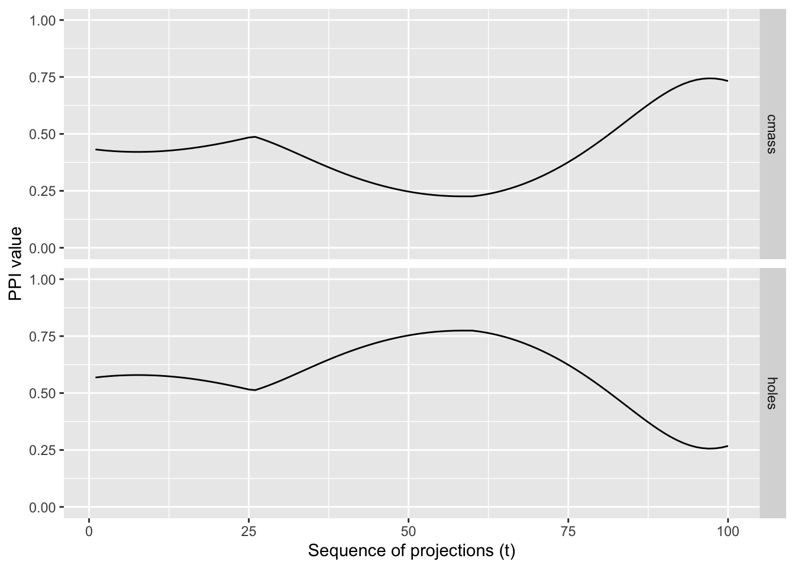

The spinebil package provides tools to explore and evaluate the behavior of Projection Pursuit Index (PPI) functions using tour methods, specifically focusing on interpolated paths and line graphs. It offers a structured approach to assessing how different PPI functions behave when applied to data with known structure and noise, by tracing their values along controlled transitions between projection planes.
Projection pursuit is a powerful technique in multivariate statistics that seeks “interesting” low-dimensional projections of high-dimensional data. These projections are identified by optimizing an index function designed to highlight structure such as clustering, outliers, or non-Gaussianity.
The methods implemented in spinebil are described in detail in this paper, and the package builds on prior work such as the tourr package.
Installation
The package can be installed from CRAN using:
install.packages("spinebil")
You can install the development version from GitHub with:
Provide a framework for systematically comparing PPI functions.
Facilitate visual diagnostics of index behavior.
Enable reproducible experiments with simulated data to understand how well indices detect meaningful structure versus random noise.
Example
To evaluate the index behaviour on a known input distribution we can trace its value when interpolating a tour path, for example moving from nuisance and structured projection.
library(spinebil)## sample from the spiral distributiond <-spiralData(4, 100)## the first two parameters are noise## parameters 3 and 4 contain a spiral## we write a list with the nuisance and structured planem <-list(basisMatrix(1,2,4), basisMatrix(3,4,4))## the index functions to be evaluated should also be passed in a listindexList <-list(tourr::holes(), tourr::cmass())indexLabels <-c("holes", "cmass")## we can now compute the index traces and plot themtrace <-getTrace(d, m, indexList, indexLabels)plotTrace(trace)

Usage
spinebil is particularly useful for researchers and developers designing new projection pursuit indices or wanting to better understand the strengths and weaknesses of existing ones. By using tour-based visual diagnostics, it helps bridge the gap between statistical rigor and exploratory data analysis.
Effect of sample size
This demonstrates how to use the ppi_samplesize_effect() function to study how projection pursuit index (PPI) values behave under increasing sample sizes in purely noisy (Gaussian) data.
Understanding how an index behaves under null conditions is critical for:
Calibrating thresholds for statistical significance
Identifying sensitivity to sample size
Comparing robustness across different index functions
What the Function Does
The function ppi_samplesize_effect() runs repeated simulations of standard normal noise across a range of sample sizes. For each size, it computes a specified index function over the samples and records the 95th percentile of index values observed. This helps estimate the distributional behavior of the index under pure noise, depending on sample size.
Example Usage
Let’s evaluate the stringy index from the cassowaryr package to see how its values change under noise as the sample size increases.